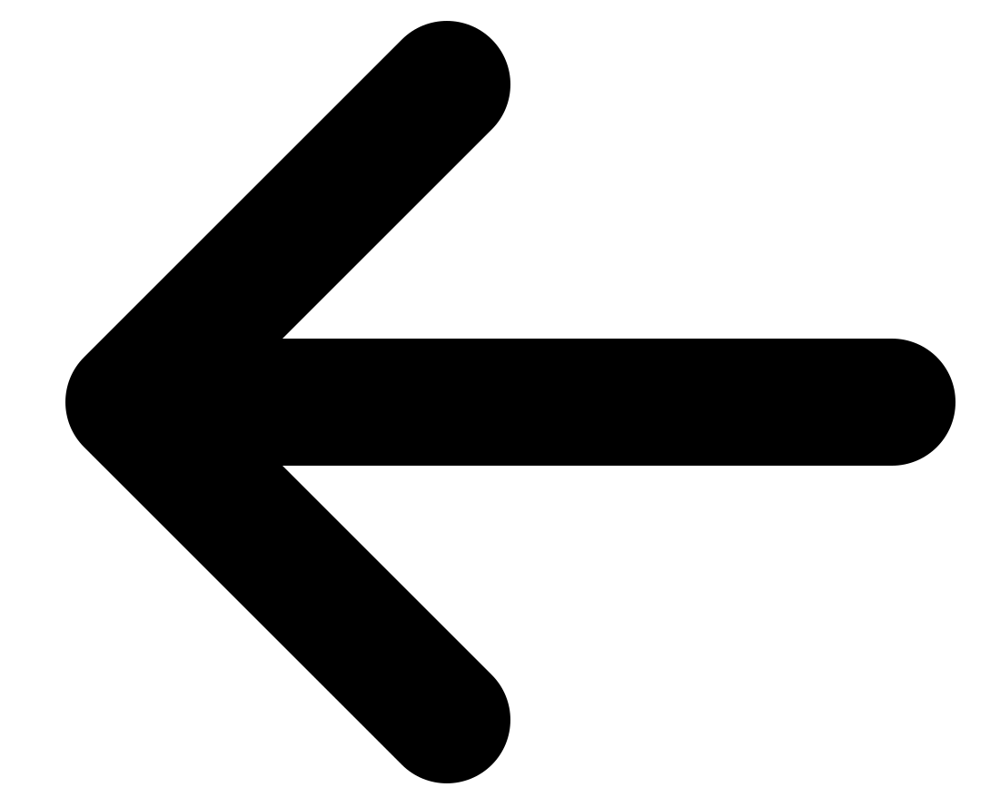
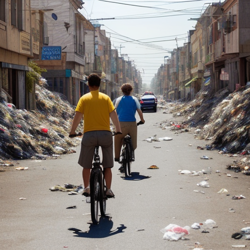

<!DOCTYPE html>
<html lang="en">
<head>
    <meta charset="UTF-8">
    <meta http-equiv="X-UA-Compatible" content="IE=edge">
    <meta name="viewport" content="width=device-width, initial-scale=1.0">
    <title>menu trajet</title>
    <link rel="stylesheet" href="itineraire.css">
    <link rel="stylesheet" href="trajet.css">
    <link type="text/css" 
    href="https://fonts.googleapis.com/icon?family=Material+Icons+Outlined" rel="stylesheet">
    <link type="text/css" href="https://fonts.googleapis.com/icon?family=Material+Icons" rel="stylesheet">
    <script src="https://cdn.jsdelivr.net/npm/showdown@2.1.0/dist/showdown.min.js"></script>
    
</head>
<body>
    <main>
        <div class="navigation" id="trajet">
            <!--
            <div class="retour">
                <a href="">
                    
                </a>
                <div>
                    <div class="endroit">
                        <div>Roscoff</div>
                        <div>></div>
                        <div>machin</div>
                    </div>
                    <div class="leurovelo5">L'Eurovelo5</div>
                </div>
            </div>
            <div class="head">
                DESCRIPTION
            </div>
            <div class="trajetcategory">
                Nature et saucisson
            </div>
            <div class="info">
                <div class="kilo">truc Km</div>
                <div class="temps">sss</div>
                <div>ddd</div>
            </div>
            <div class="trajetimgplace">
                
            </div>
            <div class="departarivee">
                <div class="depart">Pastafouille</div>
                <div class="doublefleche">swap_horiz</div>
                <div class="arivee">Labalz</div>
            </div>
            -->
        </div>
    </main>
   

    <script src="trajet.js"></script>
</body>
</html>